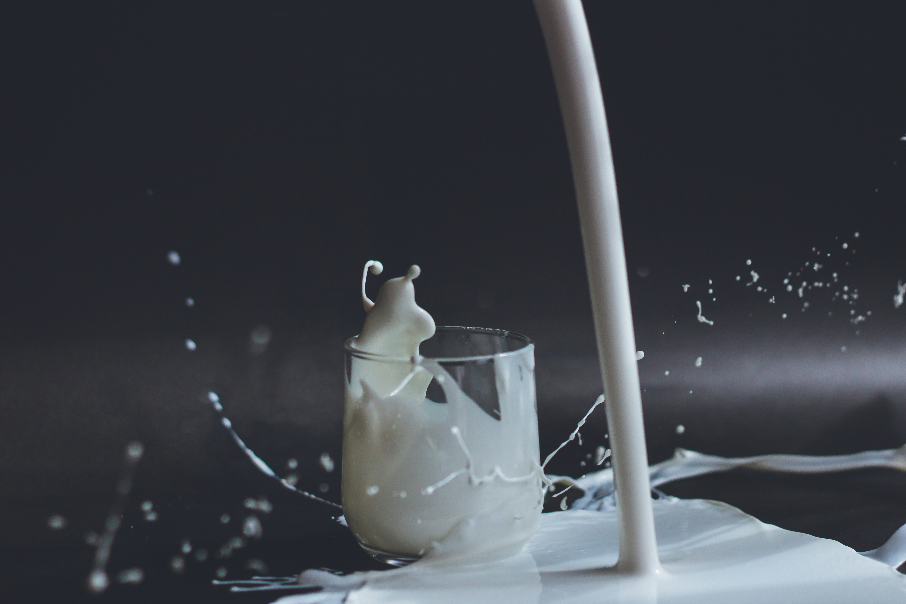
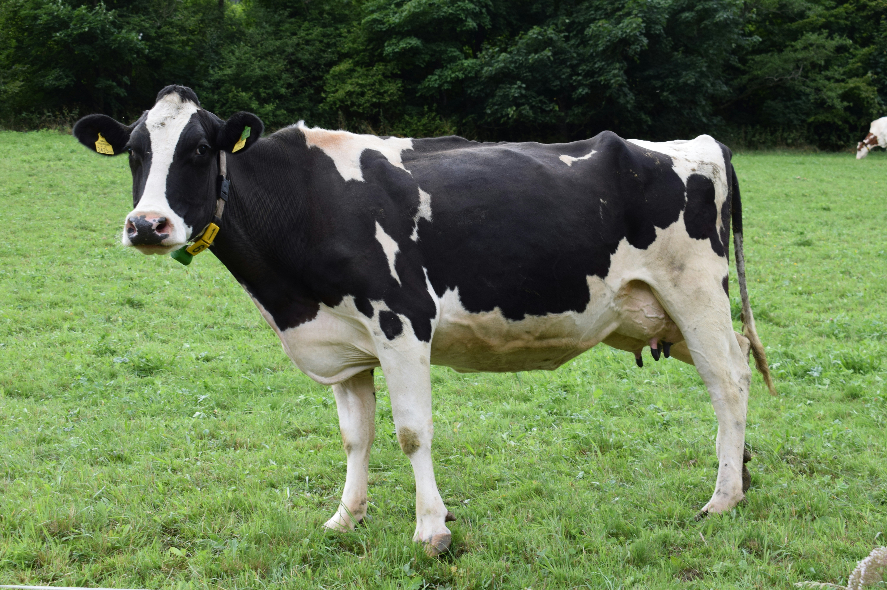
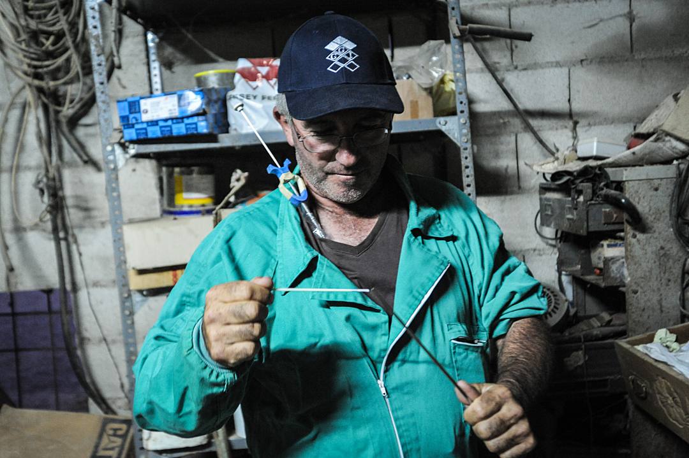
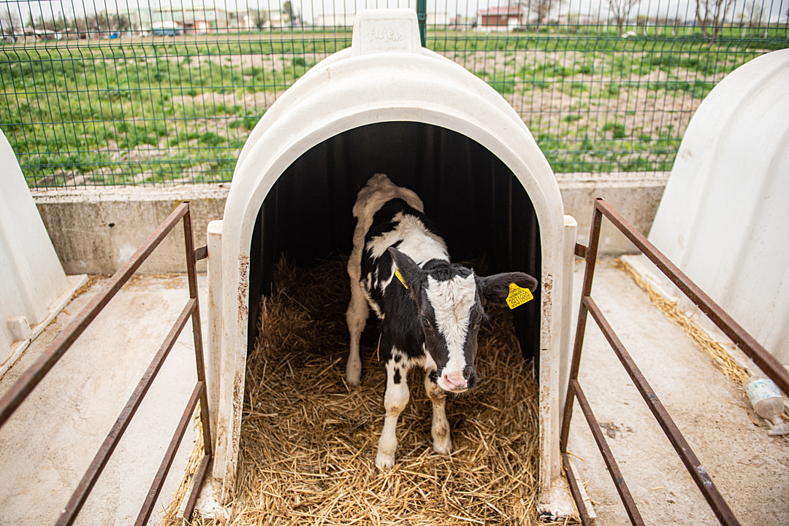
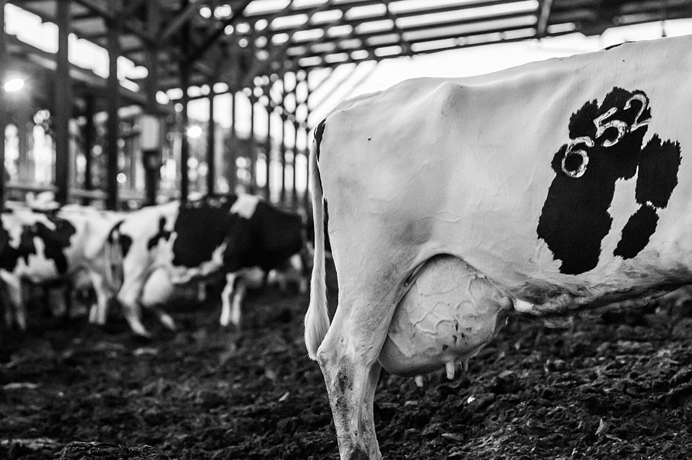
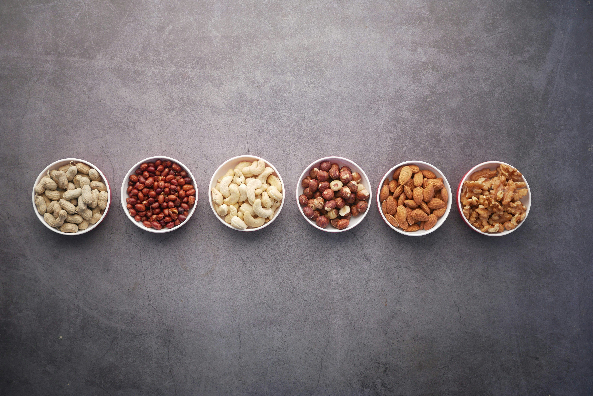

I’m sure many of us have had that same conversation with a friend at some point. “Hey, who was the first person that looked at a cow and said I'm gonna squeeze those dangly things and drink whatever comes out?” We laugh at the thought, then tuck into whatever dairy product we were about to consume when the thought arose.
In reality, the first humans to start consuming dairy didn’t do so on a whim so much as for necessity. There was an opportunity there: a reliable source of calories, protein, and hydration, as well as a food source that was less susceptible to droughts and crop failures. However, we were not consuming dairy for most of our history like some people suggest.
For the overwhelming majority of human history we drank milk only from our own mothers, like all mammals. Most humans struggled to digest lactose after weaning, and so the first dairy farmers would process raw milk through fermentation into cheese and yoghurt, not only to increase its shelf life, but also because the process breaks down 20-30% of the lactose making it much safer to consume. Generations of dairy consumption later and some humans began to be born with a genetic mutation that allowed them to safely consume dairy in greater quantities and without the need for fermentation. Give it a few thousand years and we find ourselves in the age of four-cheese pizza for dinner, with cheesecake and vanilla ice-cream for dessert, and a chocolate milkshake topped with whipped cream on the side.
So ubiquitous is dairy consumption in our culture and our food traditions that those of us who haven’t experienced dairy farming first-hand rarely have to give much thought to its production. It’s just kind of always… there. I didn’t take time to understand the process until I was well into adulthood, and I’ve since discovered that many people simply never decide to learn about it. If you’re one of those people there’s likely a lot more to it than you realise. Let’s run through it now, step-by-step.

How do you get a cow to produce milk? Well, the same way any mammal produces milk - she has to have a baby. So then how do you do that? Get a bull and put him with a group of cows and let nature run its course? Well, you could, but in many dairy industries such as the UK's, around 90–95% of breeding is carried out using AI. No, I don’t mean ChatGPT, I’m referring to artificial insemination. This is because AI allows farmers to greatly increase the probability of females being born.
Sexed semen is produced by collecting semen from a bull and adding fluorescent dyes to it that bind to DNA in the sperm carrying an X chromosome. Machinery then identifies those desired sperm and applies an electrical charge to them, which allows them to be separated from the unwanted sperm.
Futuristic stuff. Though, haven’t we kind of glossed over a step? How was the semen collected from the bull? I’ll try to keep this unpleasantry succinct. The bull is restrained and is either manually ejaculated by a farmer or veterinarian, or extra “tools” are utilised such as (and I swear I’m not making this stuff up) an electro-ejaculator, essentially a large metal rod that is placed up inside the rear end of the bull releasing an electrical current, that forces ejaculation in seconds. Research indicates this is both painful and stressful, but the animal farmers are at least considerate enough to use lubricant.
I'm going to take this moment to apologise, as I know this isn’t comfortable reading and I’m afraid there’s more to come. Perhaps grab something to drink, though maybe not a glass of milk.
Now that we’ve got our sexed semen we need to use it on a fertile female cow. This is done as soon as the cow reaches sexual maturity. Naturally, a young female cow isn’t going to be very comfortable with humans getting all up in her private parts, so restraint is required once again.
A cattle crush is a narrow metal stall that a cow can be put in to prevent him or her from being able to move. Female cows are restrained in the cattle crush and the farmer/vet will then proceed to insert his or her gloved arm into her anus, all the way up to the elbow. (You can now see why restraint was necessary.) They do this to manipulate her cervix through the rectal wall, making it easier to use their other arm to insert an artificial insemination gun loaded with sexed semen deep into her, through her cervix and into her uterus.

If all of this is starting to sound unrealistically abusive and vulgar to you then you’re not alone. I remember reading an article in The New Republic a few years back that was written to highlight the fact that most states in the US have specific exemptions to anti-bestiality laws to protect animal farmers. Without exemptions being written into law it would be illegal to produce meat and dairy the way it is produced today.
Finally, after rewriting a few laws to perform some indecent acts, we have ourselves a pregnant cow and can proceed to the next step of production: waiting nine whole months. Cow pregnancies are coincidentally almost identical in length to our own. So we have to feed and give fresh water to this cow for another nine months, after already doing so for the roughly thirteen months it took for her to reach sexual maturity.
It’s starting to get easier to understand the shocking environmental statistics around dairy production, such as a single litre of cow’s milk requiring an enormous 628 litres of fresh water input versus only 27 litres needed for the same amount of soy milk. If food labels were required to include information on the product's environmental impact, just as they carry information on nutrition, dairy farmers would likely have to lobby for more exemptions besides the bestiality ones.
Getting back on topic, nine months pass and the cow gives birth to her calf. Practices can vary, but usually calves are separated from their mothers and are placed in solitary confinement pens or cramped group housing. The calf will be fed a milk replacer and the milk the mother cow is producing will be consumed by humans instead.
If you’re wondering if this separation can be stressful or upsetting for the animals, the answer is yes. Cows have been documented crying out for their newborns, chasing after them as they are taken away, or even attempting to hide them from humans after giving birth. Most mammals display strong maternal behaviours, as should be obvious, but cows especially are highly socially developed animals who form deep emotional bonds with one another.

We’ve reached the part of production now where the story usually starts, the milking. Dairy farmers will happily inform you that cows love to be milked, and that not doing so would be cruel. Certainly they want to be milked, and certainly it would be cruel not to do so at this point. They need to dispose of that milk somehow, especially as their calf won’t be drinking it. In fact it’s a matter of urgency, as the amount of milk they are producing is astounding.
Over the last 40 years, milk yield has more than doubled due to selective breeding. A dairy cow today will be producing on average 27 litres of milk per day, and in some cases far more than that. This means they are producing six to ten times more milk than they would produce naturally for a calf. There are, of course, many negative health outcomes for the animals associated with this increased milk production, such as increased physical strain on their bodies and skeletons, an enlarged, painful, and cumbersome udder, and increased susceptibility to mastitis.

The process of forced insemination, pregnancy, calf separation, and milking will take place annually. The physical and mental toll is immense, and usually by the age of only five or six, her body is exhausted to the point she cannot continue. She is then sent to a slaughterhouse where she will be knocked unconscious with a metal bolt and have her throat slit, bleeding to death. Cows can live for over twenty years if not repeatedly put through this process.
That is the life of a female dairy cow. Not all the calves will be born female though, as even sexed semen is not 100% reliable. Male calves are either killed as infants, sometimes in their first few days of life, or else raised for anywhere between a handful of weeks and two years before being slaughtered for veal or beef.
Modern farming is intensive and increasingly industrialised. These sentient animals, with all their individual personalities, get lost amongst the statistics. There are around 270 million cows being used for their milk globally, and a similar number of goats, for whom the process is often much the same.
Between the various significant environmental impacts, the artificial insemination, the selective breeding, the separation of mother and child, the routine unlawful acts of animal cruelty that occur, and the violent execution of hundreds of millions of young animals, one has to wonder why dairy production continues today, now that humanity no longer requires it to aid our survival.
Part of the answer lies in where we started, which was with the fact that many people simply never choose to learn about dairy production. The other half of the answer is that we’re conditioned to accept dairy as a necessity for good health by marketing and advertising, which has created a cultural correlation between dairy and calcium.
Calcium is of course not exclusively found in dairy. As mentioned at the beginning of this article, we didn’t even consume dairy for the majority of our existence so we must have been getting calcium from other sources. The truth is that many foods are naturally adequate sources of calcium, including a variety of vegetables, nuts, and legumes. Dairy alternative products, such as plant-based milks and yoghurts, often are fortified and can contain as much calcium as the dairy products they are intended to replace, and sometimes even more.

We only associate calcium and dairy so strongly due to heavy investment from the dairy industry into not only advertising, but even government lobbying in some parts of the world. The dairy industry has put in tremendous effort to ensure dairy consumption is promoted to children in schools and is positioned favourably in government-approved food guidelines.
The health effects of dairy consumption are more complicated than messaging often suggests. Some research, including a study that followed more than 100,000 men and women for about 20 years, found significantly higher rates of premature death from conditions such as cardivascular disease in those who were consuming more cow's milk. There’s additional research associating dairy consumption with increased risk of prostate cancer and Parkinson's disease, as well as hormone-related conditions such as acne and diminished reproductive potential.
Unhealthy to consume or not, it is unnecessary when there are so many alternative foods with reduced environmental impacts, zero animal exploitation, and, in some instances, the ability to accurately replicate the taste and texture.
When someone says to me “I couldn’t live without cheese” my first thought is of the cows being exploited and killed so they can buy that cheese. I’ve spent time with these animals, and nothing about them suggested to me they are deserving of cruelty. My second thought is “damn, your life must be pretty miserable if you'd consider it over without cheese”. Best to keep that second thought to myself and just talk about the animals. Now that you know what I know, hopefully you’ll talk about them as well.
 Click here for more articles ←
Click here for more articles ←